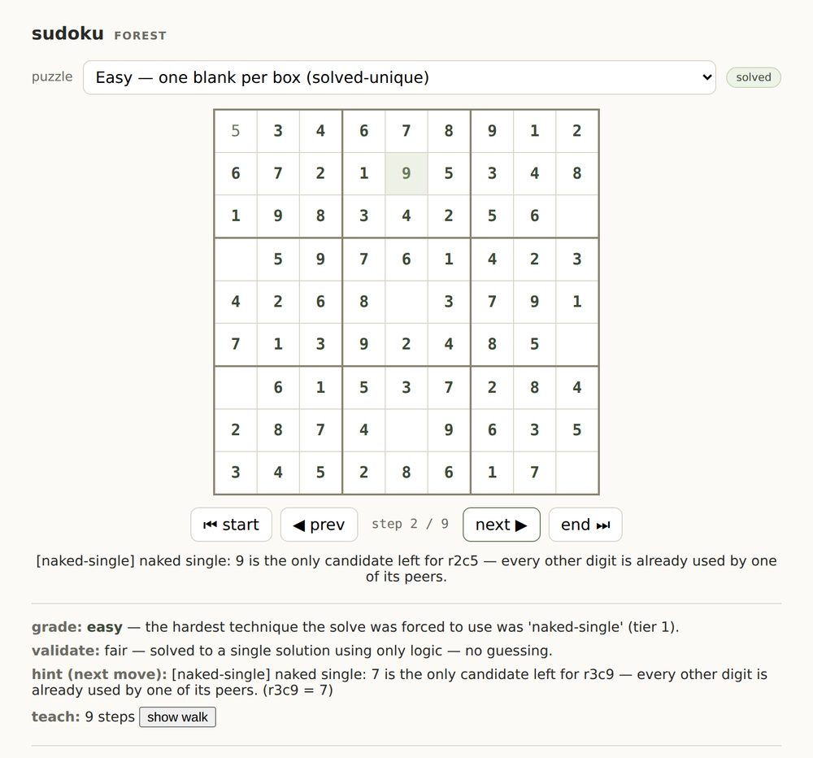

The manual flow computer: 18,000 lines, one HTML file, zero dependencies — the machine that outgrew Minecraft.
Demonstrates — a non-trivial machine as one dependency-free file.
Era — Mar 2026 · Loop 2.1


Seven things the system built — a browser flow computer, a working butcher's order desk, three games, a solver, and a personal-data platform you host yourself.
The manual flow computer: 18,000 lines, one HTML file, zero dependencies — the machine that outgrew Minecraft.
Demonstrates — a non-trivial machine as one dependency-free file.
Era — Mar 2026 · Loop 2.1
You can code stuff, right?
→ became Loop 2.1 — the 18,200-line browser flow computer
Mar 2026 read the whole prompt →

The first real Loop MMT app: an order system for Deer Hill Butchers, built in four days.
Demonstrates — spec to shipped in four days, for a real business.
OK, here's our goal- come up with an entirely novel and new way to develop software in the AI agentic age. The broad idea is to take the conceptual model of the Loop 2.1 system and use it to create a way to structure both the development of software
→ became Loop MMT + the Butcher Constellation
Apr 2026 read the whole prompt →

A Forest-native multiplayer game: Sudoku smashed into Tic-Tac-Toe, head to head.
Demonstrates — a Forest-native multiplayer app.
Era — Jul 2026 · Battleganza

A 3D-optics puzzle: steer light through lenses and mirrors. A kids' game with a university-course origin.
Demonstrates — a 3D interactive built from a course idea.
Era — Jun 2026 · Beam Wizards

A falling-block game built as a gift for Jamie — installs to the home screen like any app.
Demonstrates — an installable PWA game.

A Sudoku app in the making — its solving core already reasons through each step by the rules and can show its own working.
Demonstrates — a self-certifying solver core, reached and paused to build Battleganza; loop-sudoku returns as a full Sudoku app in the Forest.
Ed! I want to create a new game- I want to create Loop Sudoku! Jamie is a Sudoku pro. I am decent. She plays just about every day
→ became loop-sudoku — the self-certifying solver core

A sovereign personal-data platform — email, calendar, contacts, and files on your own box. Live.
Demonstrates — personal-data sovereignty, running live.
Era — Jun 2026 · Forest
The apps above are code you can read. These three are code you can take — grain, cairn, and plumb, pulled out of the system, stripped of the methodology, and given away under MIT with each tool’s limits printed on it.